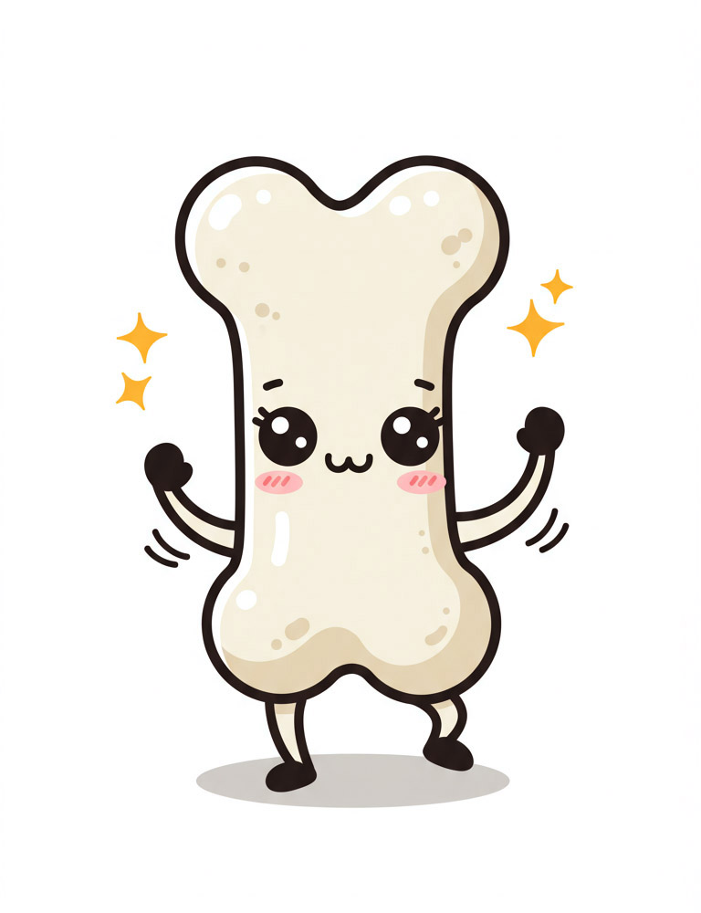

ID: 名前: 記載日:
年齢: 歳 性別: 身長: cm 体重: kg

疾患:
薬剤:
抗癌剤など:
喫煙:
アルコール摂取:
その他:
| 部位 | ％YAM |
|---|---|
| 腰椎 | |
| 大腿骨近位部 |
80％以上が目標です。
70％未満は骨粗鬆症と診断されます。
60％未満は重症骨粗鬆症で骨折リスクが非常に高い状態です。
| 項目 | 結果 | 適正範囲 |
|---|---|---|
| 血清カルシウム値 (mg/dL) | ||
| 血清リン値 (mg/dL) | ||
| eGFR (mL/min/1.73m²) | ||
| 血清ビタミンD (ng/mL) | ||
| 骨形成マーカー (BAP) (μg/L) | ||
| 骨吸収マーカー (TRACP-5b) (mU/dL) |
| 指標 | 全ての骨折 (%) | 大腿骨骨折 (%) |
|---|---|---|
| FRAX | ||
| QFracture |
※ いずれかの値が15％を超える場合は骨折リスクが高く，治療をお勧めします。
| 推奨度 (A＞E) | 薬剤 |
|---|---|